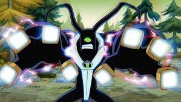
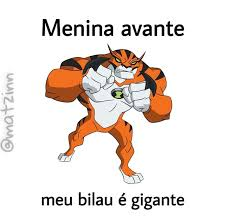
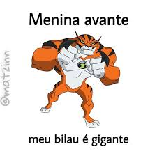

ben vacaino
Publicado: 12/03/2024

Feedback se mostrou poderoso a ponto de poder absorver a energia emitida por um universo. Ele também poderia absorver níveis multiversais de energia, desde que a energia dos outros universos siga as mesmas leis da física. Por isso, Feedback facilmente pode ser considerado um dos alienígenas mais poderosos da franquia.
Leia mais..
volkswagem
Publicado: 05/09/2023
<<<<<<< HEAD
 =======

=======

Seemed from the start it would end this way
Tell me how it feels to fade away, away from me
I watched you run away from yourself to escape
(Run away from yourself to escape)
And I can't believe a word you say to me, don't say to me
Seemed from the start it would end this way (It would end this time)
Tell me how it feels to fade away, away from me
I watched you run away from yourself to escape
(Run away from yourself to escape)
And I can't believe a word you say to me, don't say to me
Leia mais..
23 de Novembro - Dia do Engenheiro Eletricista
Publicado: 23/11/2022

O dia do Engenheiro Eletricista é comemorado no dia 23 de novembro, é uma homenagem aos profissionais responsáveis por toda energia elétrica que é distribuída, fazendo com que a energia chegue da melhor e mais segura forma aos pontos de entrega, sendo assim, foi criado um dia dedicado a profissionais que carregam a grande responsabilidade de manter o funcionamento todas as fontes de energia de um país.
Leia mais..
15 de Outubro - Dia dos "sofredores" digo, dos Professores
Publicado: 15/10/2022

O dia 15 de outubro foi escolhido para comemorar o dia do professor, pois em 15 de outubro de 1827, Dom Pedro I, Imperador do Brasil, decretou uma Lei Imperial responsável pela criação do Ensino Elementar no Brasil (do qual chamou “Escola de Primeiras Letras”), e através deste decreto todas as cidades deveriam ter suas escolas de primeiro grau.
Leia mais..